государственный
комитет cОbeta министРов ссср
по делам строительства
ГОССТРОЙ СССР)
СТРОИТЕЛЬНЫЕ НОРМЫ И ПРАВИЛА
СНиП II-26-76
кровли
Утверждены постановлением Государственного комитета Совета Министров СССР по делам строительства от 31 декабря 1976 г. № 226.
Глава СНиП II-26-76 «Кровли» разработана ЦНИИпромздания Госстроя СССР с участием ЦНИИЭПжилища Госгражданстроя, ЦНИИЭПсельстроя Минсельстроя СССР, ЦНИИСК им. Кучеренко Госстроя СССР и ВНИИпроектасбестцемента Минстройматериалов СССР.
С введением в действие главы СНиП II-26-76 утрачивает силу «Инструкция по проектированию рулонных и мастичных кровель зданий и сооружений промышленных предприятий» (СН 394-74).
Изменение, утвержденное постановлением Госстроя СССР от 27 июня 1979 г. № 101 и с 1 января 1980 г. введенное в действие внесено в текст документа, измененные пункты отмечены*.
|
Государственный комитет Совета Министров СССР по делам строительства (Госстрой СССР) |
Строительные нормы и правила |
СНиП II-26-76 |
|
Кровли |
Взамен |
1.1. Нормы настоящей главы необходимо соблюдать при проектировании кровель из рулонных, мастичных материалов и из асбестоцементных волнистых листов для зданий и сооружений различного назначения.
Для чердачных покрытий жилых и общественных зданий при технико-экономическом обосновании допускается предусматривать кровли из железобетонных панелей лоткового сечения согласно табл. 1 настоящих Норм.
|
Внесены |
Утверждены |
Срок введения в действие |
Материалы, применяемые для кровель и элементов покрытий, на которые нет государственных стандартов, должны отвечать требованиям, предусмотренным техническими условиями или другой нормативно-технической документацией отраслевого значения на эти материалы и настоящими Нормами.
Таблица 1
|
Уклоны, % |
Воздействия на кровли |
||||
|
нагревание1), 2) до температуры, °С, не более |
механические (удары)3), кгс×м, не более |
щелочных растворов4) |
кислотных растворов4) |
||
|
1. Из рулонных материалов (рулонные) и мастик, армированных стекломатериалами (мастичные): |
|
|
|
|
|
|
а) с защитным слоем из гравия |
0 - менее 10 |
65 |
2 |
Допускаются5) |
Допускаются6) |
|
б) с верхним слоем из материалов с крупнозернистой или чешуйчатой посыпкой |
10-257) |
75 |
1 |
Допускаются8) |
» |
|
2. Рулонные с защитным слоем: |
|
|
|
|
|
|
а) из бетонных и армоцементных плит |
0 - менее 2,5 |
65 |
10 |
Допускаются |
Не допускаются |
|
б) из цементно-песчаного раствора |
То же |
65 |
5 |
» |
То же |
|
в) из песчаного асфальтобетона |
» |
65 |
5 |
» |
Допускаются |
|
3. Из асбестоцементных волнистых листов |
10-33 |
80 |
Не допускаются |
» |
Не допускаются |
|
4. То же, при применении в IVА и IVГ климатических подрайонах |
10-20 |
80 |
То же |
» |
То же |
|
5. Из железобетонных панелей лоткового сечения9) |
5-10 |
80 |
5 |
» |
» |
|
1) Температуру нагревания кровли определяют расчетом (с учетом технологических тепловыделений) по нормам строительной теплотехники и строительной климатологии. Для снижения температуры нагревания кровли следует применять материалы защитных слоев (например, гравий) светлых тонов. При воздействии местных источников лучистого тепловыделения соответствующие участки кровель снизу должны защищаться подвесными экранами. 2) На участках покрытий зданий с повышенными тепловыделениями, где по условиям нагревания нельзя применять рулонные, мастичные и асбестоцементные материалы, допускается при соответствующем обосновании предусматривать кровли из стальных листов. 3) Ударные воздействия при работе ломами условно приравниваются к ударам твердых предметов весом 30 кгс с высоты 1м, при волочении твердых предметов с острыми углами и ребрами - предметов весом 10 кгс, при работе с металлическими лопатами - предметов весом 5 кгс, при работе с деревянными лопатами - предметов весом 1 кгс. 4) Предусматривается возможность воздействия на кровли периодически увлажняющихся производственных выделений, содержащих агрессивные среды. 5) Мастики должны содержать добавки с учетом примеч. 3 к табл. 3. 6) Гравий, применяемый для защитного слоя должен быть из изверженных пород, стойких к воздействию растворов кислот. 7) На участках кровель с уклоном более 25 %, допускаемых в исключительных случаях, при длине ската более 1,5 м необходимо предусматривать применение более теплостойких мастик (по табл. 3 для устройства мест примыкании) и закрепление водоизоляционного ковра толевыми гвоздями размером 2´25 мм (ГОСТ 4029-63) через 200 мм к деревянным антисептированным рейкам которые необходимо заделывать в основания под кровлю с учетом ширины закрепляемых рулонных материалов и необходимости укладки их с нахлесткой по скату кровли не менее 70 мм. 8) По водоизоляционному ковру необходимо предусматривать нанесение мастик в соответствии с п. 2.12. 9) Для панелей должны применяться бетоны марок: по водонепроницаемости - В-6 - В-10, по морозостойкости - не менее Мрз 200 (ГОСТ 4795-68, ГОСТ 4800-69). При применении панелей лоткового сечения из бетонов марки по водонепроницаемости В-6 необходимо предусматривать окраску лицевой поверхности панелей одним из следующих составов: видной суспензией тиокола Т-50 толщиной 1 мм; раствором наирита НТ толщиной 1 мм; битумно-бутилкаучуковой мастикой МББ-Х-120 толщиной 2 мм. В местах пропуска вентиляционных блоков, труб и другого инженерного оборудования железобетонные панели лоткового сечения должны иметь отверстия с обрамлением, выступающим на высоту не менее 100 мм. |
|||||
1.2. Выбор вида кровель следует производить по табл. 1 в зависимости от их уклонов, принимаемых с учетом норм проектирования соответствующих зданий и сооружении, районов строительства и воздействий на кровли.
Кровли из рулонных и мастичных материалов предпочтительно применять на уклонах до 2,5 %; предусматривать такие кровли на уклонах более 12 % допускается при соответствующем обосновании.
1.3. В рабочих чертежах кровель необходимо указывать:
конструкцию кровли, наименование и марки материалов и изделий со ссылками на государственные стандарты или технические условия;
величину уклонов, места установки водосточных воронок и расположение деформационных швов;
детали кровель в местах установки водосточных воронок и примыкании к стенам, парапетам, вентиляционным и лифтовым шахтам, карнизам и другим конструктивным элементам.
В рабочих чертежах строительной части проекта должно быть указано на необходимость разработки мероприятий по противопожарной защите и по контролю за выполнением правил пожарной безопасности и правил техники безопасности при производстве строительно-монтажных работ.
1.4. На покрытиях с несущими стальными профилированными настилами не допускается установка аппаратов и оборудования со сгораемыми материалами, легковоспламеняющимися и горючими жидкостями и газами.
конструкции кровель и применяемые МАТЕРИАЛЫ
2.1. Конструкции кровель из рулонных и мастичных материалов в зависимости от уклонов и применяемых материалов следует предусматривать согласно табл. 2.
Таблица 2
|
Уклон кровли % |
Вид кровли |
Тип кровли |
Основной водоизоляционный ковер |
Защитный слой по верху водоизоляционного ковра |
|
0 - менее 2,5 |
Рулонная |
К-1 |
4 слоя на дегтевой мастике: а) толя гидроизоляционного с покровной пленкой марки ТГ-350 или ТГ-300 (ГОСТ 10999-76) б) толя гидроизоляционного антраценового марки гидроизоляционного ТАГ-350 |
слой гравия на дегтевой мастике в соответствии с п. 2.10 |
|
K-1A |
То же |
Для кровель, заполняемых водой, - слой гравия толщиной 20 мм на дегтевой мастике |
||
|
K-2 |
4 слоя на битумной мастике: а) гидроизола марок ГИ-Г, ГИ-К (ГОСТ 7415-74* б) рубероида антисептированного дегтевого марки РМД-350 в) толя гидроизоляционного с покровной пленкой марки ТГ-350 или ТГ-300 (ГОСТ 10999-76) г) толя гидроизоляционного антраценового марки гидроизоляционного ТАГ-350 |
Слой гравия на дегтевой или антисептированной битумной мастике |
||
|
K-2A |
То же |
Для кровель, заполняемых водой, - слой гравия толщиной 20 мм на дегтевой или антисептированной битумной мастике |
||
|
К-3 |
4 слоя стеклорубероида марки С-РМ (ГОСТ 15879-70) на битумной мастике |
Слой гравия на антисептированной битумной мастике |
||
|
К-3А |
4 слоя на антисептированной битумной мастике: а) рубероида с эластичным покровным слоем марки РэМ-350 б) рубероида антисептированного дегтевого марки РМД-350 в) рубероида кровельного с мелкозернистой посыпкой марок РКМ-350Б, РКМ-350В (ГОСТ 10923-76) г) рубероида подкладочного с пылеватой посыпкой марок РПП-350Б, РПП-350В (ГОСТ 10923-76) |
То же |
||
|
К-4 |
5 слоев на дегтевой мастике: а) толя гидроизоляционного с покровной пленкой марки ТГ-350 или ТГ-300 (ГОСТ 10999-76) б) толя гидроизоляционного антраценового марки гидроизоляционного ТАГ-350 |
Для эксплуатируемых кровель - в соответствии с п. 2.11 |
||
|
К-4А |
5 слоев на антисептированной битумной мастике: а) гидроизола марок ГИ-Г, ГИ-К (ГОСТ 7415-74*) б) рубероида антисептированного дегтевого марки РМД-350 |
Для эксплуатируемых кровель - в соответствии с п. 2.11 |
||
|
Мастичная |
К-5 |
4 слоя битумной или битумно-резиновой мастики с четырьмя армирующими прокладками из стеклохолста марок ВВ-Г, ВВ-К или из стеклосетки марок ССС, СС-1 |
Слой гравия на антисептированной битумной мастике или битумно-резиновой мастике |
|
|
2,5 - менее 10 |
Рулонная |
К-6 |
3 слоя на дегтевой мастике: а) толя гидроизоляционного с покровной пленкой марки ТГ-350 или ТГ-300 (ГОСТ 10999-76) б) толя гидроизоляционного антраценового марки гидроизоляционного ТАГ-350 в) рубероида антисептированного дегтевого марки РМД-350 |
Слой гравия на дегтевой или битумной мастике |
|
К-7 |
3 слоя на битумной мастике: а) стеклорубероида марки С-РМ (ГОСТ 15879-70) б) рубероида с эластичным покровным слоем марки РэМ-350 в) рубероида кровельного с мелкозернистой посыпкой марок РКМ-350Б, РКМ-350В (ГОСТ 10923-76) г) рубероида подкладочного с пылеватой посыпкой марок РПП-350Б, РПП-350В (ГОСТ 10923-76) |
Слой гравия на битумной мастике |
||
|
Мастичная |
К-8 |
3 слоя битумной или битумно-резиновой мастики с четырьмя армирующими прокладками из стеклохолста марок ВВ-1, ВВ-К или из стеклосетки марок ССС, СС-1 |
Слой гравия на битумной или битумно-резиновой мастике |
|
|
10-25 |
Рулонная |
К-9 |
2 слоя (нижних) на битумной мастике: а) стеклорубероида марки С-РМ (ГОСТ 15879-70) б) рубероида с эластичным покровным слоем марки РэМ-350 в) рубероида подкладочного антисептированного дегтевого марки РПД-300 г) рубероида кровельного с мелкозернистой посыпкой марок РКМ-350Б, РКМ-350В (ГОСТ 10923-76) д) рубероида подкладочного с пылеватой посыпкой марок РПП-350Б, РПП-350В (ГОСТ 10923-76) е) рубероида подкладочного с мелкозернистой посыпкой марок РПМ-300А, РПМ-300Б, РПМ-300В (ГОСТ 10923-76) ж) пергамина кровельного марок П-350, П-300 (ГОСТ 2697-75) 1 слой (верхний) на битумной мастике: а) стеклорубероида марок С-РК, С-РЧ (ГОСТ 15879-70) б) рубероида с крупнозернистой посыпкой антисептированного дегтевого марок РКД-420, РКД-350 в) рубероида с цветной посыпкой марки РКЦ-420 г) рубероида с эластичным покровным слоем и крупнозернистой или чешуйчатой посыпкой марки РаК-420 или РэЧ-350 г) рубероида кровельного с крупнозернистой или чешуйчатой посыпкой марок РКК-500А, РКК-400А, РКК-400Б, РКК-400В, РКЧ-350Б, РКЧ-350В, (ГОСТ 10923-76) |
В ендовах - слой гравия по ширине усиления водоизоляционного ковра в соответствии с п. 2.3 |
|
Мастичная |
К-10 |
2 слоя битумной или битумно-резиновой мастики, армированных двумя прокладками из стеклохолста марок ВВ-Г, ВВ-К или из стеклосетки марок ССС, СС-1; 1 слой (верхний) из рубероида с крупнозернистой или чешуйчатой посыпкой (в соответствии с типом кровли К-9) на битумной или битумно-резиновой мастике |
В ендовах - слой гравия по ширине усиления основного водоизоляционного ковра |
|
|
Рулонная |
К-11 |
2 слоя (нижних) наплавляемого рубероида марки РМ-500-2; 1 слой (верхний) наплавляемого рубероида марки РК-500-2 или РК-420-1 |
То же |
|
|
К-12 |
1 слой (нижних) наплавляемого рубероида марки РМ-500-2; 1 слой (средний) наплавляемого рубероида марки РМ-420-1 или РМ-350-1; 1 слой (верхний) наплавляемого рубероида марки РК-500-2 или РК-350-1 |
В ендовах - слой гравия по ширине усиления основного водоизоляционного ковра |
||
|
Примечания: 1. Следует предусматривать грунтовку стеклосетки раствором битума пятой марки в керосине, приготовленном в соотношении по весу 1:2. В мастичных кровлях, армированных стеклосеткой, допускается уменьшать на один слой число слоев мастики и армированных прокладок. 2. В кровлях типа К-9 не следует применять подкладочный рубероид и пергамин по основанию из теплоизоляционных материалов (без устройства стяжки). 3. Кровля типов К-1 - К-5 на фонарях должны состоять из трехслойного водоизоляционного ковра и защитного слоя из гравия. 4. Необходимо предусматривать окраску кровель типов К-9 - К-12 краской БТ-177 (ГОСТ 5631-70*). если их верхний слой не имеет рубероида с крупнозернистой или чешуйчатой посыпкой. В проекте следует указывать, что окраску необходимо возобновлять через 2-3 года. 5. Для жилых зданий, возводимых в I и II климатических районах, допускается при соответствующем технико-экономическом обосновании на уклонах 2-3 % проектировать кровли по типу К-9, предусматривая 3 нижних слоя из указанных материалов и 1 верхний слой из стеклорубероида марки С-РК или из рубероида с цветной посыпкой марки РКЦ-420 или из рубероида с крупнозернистой посыпкой марок РКК-500А, РКК-400А, РКК-400Б, РКК-400В. 6. Кровли, заполняемые водой, допускается предусматривать в соответствия с расчетом на теплоустойчивость в районах со среднемесячной температурой июля 25 °С и выше. |
||||
2.2. Мастики для устройства кровель следует назначать в зависимости от района строительства, вида и уклона кровель в соответствии с табл. 3.
Таблица 3
|
Мастика |
Марки мастик для устройства |
||||
|
участков кровель с уклоном % |
мест примыканий |
||||
|
менее 2,5 |
2,5 - менее 10 |
10 - 25 |
|||
|
Севернее географической широты 50° для европейской и 53° для азиатской частей СССР |
Дегтевая горячая (ГОСТ 3580-67) |
мдк-Г-50 |
мдк-г-60 |
Не допуск. |
МДК-Г-70 |
|
Битумная горячая (ГОСТ 2889-67) |
МБК-Г-55 |
МБК-Г-65 |
МБК-Г-75 |
МБК-Г-85 |
|
|
Битумно-резиновая горячая |
МБР-Г-55 |
МБР-Г-65 |
МБР-Г-75 |
МБР-Г-85 |
|
|
Битумная холодная |
МБК-Х-65 |
Не допускается |
|||
|
Битумно-латексно-кукерсольная холодная |
БЛК-Х-65 |
То же |
|||
|
Битумно-кукерсольная холодная |
БК-Х-65 |
То же |
|||
|
Южнее этих районов |
Дегтевая горячая (ГОСТ 3580-67) |
МДК-Г-60 |
МДК-Г-70 |
Не допускается |
мдк-г-80 |
|
Битумная горячая (ГОСТ 2889-67) |
MБK-Г-65 |
МБК-Г-75 |
МБК-Г-85 |
МБК-Г-100 |
|
|
Битумно-резиновая горячая |
МБР-Г-65 |
МБР-Г-75 |
МБР-Г-85 |
МБР-Г-100 |
|
|
Битумная холодная |
МБК-Х-75 |
Не допускается |
|||
|
Битумно-латексно-кукерсольная холодная |
БЛК-X-75 |
То же |
|||
|
Битумно-кукерсольная холодная |
БК-Х-75 |
То же |
|||
|
Примечания: 1. Цифра в марке мастик обозначает температуру ее теплостойкости, °С. 2. Горячие и холодные битумные мастики для наклейки неантисептированных рубероидов (на картонной основе) на кровлях с уклоном до 2,5 % должны быть антисептированы путем добавки кремнефтористого (ГОСТ 87-66*) или фтористого (ГОСТ 2871-75) натрия в количестве 4-5 % от веса битума (либо путем добавки других фунгицидов), в качестве наполнителя для таких мастик должен применяться низкосортный асбест. В состав холодных битумно-латексно-кукерсольных и битумно-кукерсольных мастик вводить антисептирующие добавки не требуется. 3. Битумные мастики, применяемые для кровель с уклоном до 10 %, и на которые возможно воздействие щелочной среды, должны содержать добавки из хлорсульфополиэтиленового лака в количестве 3 - 5 % (в пересчете на сухое вещество) веса битума и тонкомолотые наполнители из карбонатных пород (мела, известняка). 4. Не допускается применение дегтевых и холодных (на растворителях) битумных мастик для кровель, выполняемых по пенополистерольным, минераловатным, стеклопластовым плитам и композиционным утеплителям с применением пенополистерола. 5. Холодные мастики не допускается применять для наклейки рубероидов с основой из стекломатериалов. 6. Для кровель с переменным уклоном (например, в покрытиях с сегментными фермами) марку мастики назначают по наибольшему значению уклона кровли. |
|||||
Слои горячей мастики в водоизоляционном ковре должны иметь толщину 2 мм, а холодной - 1 мм.
2.3. В кровлях с уклоном 2,5 % и более на участках ендов следует предусматривать усиление основного водоизоляционного ковра двумя слоями рулонных кровельных материалов (при рулонных кровлях) или двумя мастичными слоями, армированными стекломатериалами (при мастичных кровлях), которые должны быть заведены на поверхность ската (от линии перегиба) не менее чем на 750 мм. В ендовах кровель типов К-9 - К-12 необходимо предусматривать устройство защитного слоя в соответствия с п. 2.10 по ширине усиления основного водоизоляционного ковра.
2.4. Конек кровли (при уклоне 2,5 % и более) должен быть усилен на ширину 0,25 м с каждой стороны одним слоем рулонного кровельного материала (при рулонных кровлях) или одним мастичным слоем, армированным стеклохолстом или стеклосеткой (при мастичных кровлях).
Для слоев дополнительного водоизоляционного ковра следует предусматривать применение мастик с повышенной теплостойкостью согласно табл. 3.
Слои водоизоляционного ковра при высоте стен до 450 мм должны быть заведены на их верхнюю грань; при большей высоте слои водоизоляционного ковра следует закреплять к вертикальным поверхностям в соответствии со схемами деталей в прил. 6.
Верхний край дополнительного водоизоляционного ковра должен бить закреплен и защищен от затекания атмосферных осадков оцинкованной кровелькой сталью или парапетными плитами. Необходимо предусматривать заполнение швов между парапетными плитами герметизирующими мастиками.
2.6. Карнизные участки кровель при наружном водоотводе должны быть усилены двумя слоями водоизоляционного ковра на ширину не менее 400 мм; на участках карнизов, выходящих за пределы наружной грани стен, уклон кровли должен быть не менее чем на примыкающей к карнизу плоскости кровли.
2.7. Для пропуска через кровли труб, шахт крышных вентиляторов и других устройств на несущие плиты или настилы покрытий следует устанавливать стальные патрубки высотой не менее 300 мм с фланцами или железобетонные стаканы. Эти места должны быть усилены двумя слоями водоизоляционного ковра и защищены зонтом из оцинкованной стали согласно рис. 3 приложения 6.
2.8. В местах пропуска анкерных болтов следует предусматривать подъем основания под кровлю для заделки слоев основного и дополнительного водоизоляционного ковра так же, как и в местах примыкания кровли к выступающим конструктивным элементам или усиление слоем герметизирующей мастики.
оцинкованную кровельную сталь толщиной 0,5-0,8 мм (ГОСТ 7118-54** и ГОСТ 8075-56**). Для защитных фартуков допускается применение профилированных листов из полиэфирных стеклопластиков толщиной 2 мм;
оцинкованные кровельные гвозди К-3,5´40 (ГОСТ 4030-63);
стальные полосы 4´40 мм (ГОСТ 103-76) оцинкованные или с противокоррозионной окраской - для крепления водоизоляционного ковра и защитных фартуков к бетонным поверхностям;
герметизирующие мастики: АМ-0,5, эластосил 11-06, УТ-31, УТ-32 и др. Сверху мастика должна быть защищена цементным раствором или окрашена краской БТ-177 (ГOCT 5631-70*).
2.10. Гравий по ГОСТ 8268-74* для защитного слоя кровель должен быть сухим, обеспыленным, иметь зерна размером 5 - 10 мм и марку по морозостойкости ни ниже 100, а в районах строительства со среднесуточной температурой до минус 35 °С - не ниже 75. Допускается применение для защитного слоя каменной крошки, соответствующей указанным требованиям.
Толщина защитного слоя из гравия должна составлять 10 мм, а на кровлях покрытий с применением металлического профилированного частила (при уклоне кровли до 125 %) и на кровлях, заполняемых водой, - 20 мм.
Для защитного слоя из гравия необходимо предусматривать горячую мастику. Толщина слоя мастики должна быть не более 2 мм, а на кровлях, заполняемых водой, - 3 мм.
Битумная и битумно-резиновая мастики для устройства защитного слоя кровель типов К-2 - К-3А, К-4А, К-6 должны быть антисептированы (против прорастания) добавками порошковых гербицидов: монурона или симазина (ГОСТ 15123-69) в количестве 0,3-0,5 % или аминной, натриевой соли 2,4Д в количестве 1 - 1,5 % веса битума.
На участках кровель, предназначенных для производственных целей (участки уборки производственной пыли, монтажные площадки и т.п.), необходимо предусматривать защитные слои из цементно-песчаного раствора, песчаного асфальтобетона и плитных материалов, укладываемых на цементно-песчаном растворе. В защитном слое необходимо предусматривать температурно-усадочные швы шириной 10 мм (не более чем через 1,5 м во взаимно перпендикулярных направлениях), дополняемые герметизирующими мостиками.
На эксплуатируемых кровлях, предназначенных для соляриев, спортивных площадок и т.п., защитный слой следует предусматривать из плит по слою кварцевого песка толщиной не менее 30 мм.
По поверхности основного водоизоляционного ковра кровель К-4 и К-4А необходимо предусматривать нанесение сплошного слоя горячей кровельной мастики толщиной 2 мм. Битумные мастики следует антисептировать против прорастания согласно п. 2.10.
Конструкцию проходов к эксплуатируемым участкам кровель следует принимать по аналогии с конструкцией эксплуатируемых кровель либо предусматривать для проходов деревянные решетчатые настилы.
2.13. На кровлях, заполняемых водой, у мест подачи воды необходимо предусматривать деревянные или металлические щиты, предохраняющие кровлю от непосредственного воздействия струи воды.
РЕШЕНИЕ ЭЛЕМЕНТОВ ПОКРЫТИЯ И ВЫБОР ТИПОВ КРОВЕЛЬ
2.14. Конструктивные элементы покрытий и типы кровель из рулонных материалов и мастик, армированных стекломатериалами, следует принимать в соответствии с прил. 2.
2.15. Комплексные плиты, панели и монтажные блоки покрытий повышенной строительной готовности должны иметь не менее одного слоя водоизоляционного ковра.
2.16. В качестве основания под кровлю должны предусматриваться конструктивные элементы покрытий без стяжек по их поверхности:
а) теплоизоляционные слои типов Т-1 - Т-7, Т-9, Т-10, Т-16 (согласно прил. 4) в покрытиях типов П-1 - П-3;
б) ровные поверхности несущих плит в покрытиях типов П-5 - П-8.
Допускается предусматривать выравнивание поверхности железобетонных плит цементно-песчаным раствором марки 50 толщиной 10 мм (тип стяжки С-1) в покрытиях типа П-5.
2.18. По засыпным утеплителям (типа Т-15), применение которых допускается только на органических площадях покрытий построечного выполнения, необходимо предусматривать стяжку из цементно-песчаного раствора повышенной жесткости (осадка конуса до 30 мм) марки 100 толщиной 25 мм (тип стяжки С-3).
2.19. При необходимости производства работ в зимних условиях для приготовления цементно-песчаного раствора следует предусматривать применение керамзитового песка с добавлением поташа в количестве 10 - 15 % веса цемента; раствор должен быть марки 100.
В осенне-зимний период по монолитным и плитным утеплителям допускается предусматривать стяжку из песчаного асфальтобетона толщиной 15 мм (прочностью на сжатие не ниже 8 кгс/см2 при 50 °С); для приготовления асфальтобетона должен применяться битум с содержанием парафина не более 3,5 %; теплостойкость песчаного асфальтобетона должна превышать максимальную температуру воздуха в районе строительства не менее чем в 2 раза. Стяжки из песчаного асфальтобетона не допускается предусматривать при уклонах кровель более 25 %, по засыпным и сжимаемым утеплителям, при наклейке рулонных материалов на холодных кровельных мастиках.
В стяжках следует предусматривать температурно-усадочные швы шириной до 5 мм, разделяющие поверхность стяжки из цементно-песчаного раствора на участки размером не более 6´6 м, а из песчаного асфальтобетона - на участки не более 4´4 м; в покрытиях с несущими плитами длиной 6 м эти участки должны быть 3´3 м. Температурно-усадочные швы в стяжках должны располагаться над торцовыми швами несущих плит и над температурно-усадочными швами в слоях монолитной теплоизоляции.
2.20. По температурно-усадочным швам в стяжках, теплоизоляционных материалах монолитной укладки и над торцовыми стыками несущих плит (неутепленных или комплексных утепленных) должна предусматриваться укладка полос шириной 150 мм из рубероида с посыпкой (например, марки РКЧ-350В, РПП-300В и др.) и точечная приклейка их с одной стороны шва.
Под торцовыми стыками каркасных асбестоцементных плит (в покрытиях типа П-7) и плит из армированных легких бетонов с отверстиями (в покрытиях типа П-8) перед укладкой полос из рубероида следует предусматривать закрепление с одной стороны стыка полос из оцинкованной кровельной стали шириной 100 мм. Необходимо предусматривать заделку этих стыков теплоизоляционными материалами до низа вентилируемых прослоек или каналов.
2.21. У мест примыканий кровель к стенам, шахтам и другим конструктивным элементам основанием под водоизоляционный ковер должны служить ровные вертикальные поверхности конструкций и переходные наклонные бортики (под углом 45) высотой не менее 100 мм из теплоизоляционных материалов, применяемых в качестве основания под кровлю, либо из легкого бетона марки 50, цементно-песчаного раствора, песчаного асфальтобетона. Стены из кирпича и блоков в этих местах выравнивают цементно-песчаным раствором марки 50.
2.22. По поверхности основания из бетона или цементно-песчаного раствора должна предусматриваться огрунтовка:
раствором битума пятой марки в керосине или соляровом масле в соотношении (по весу от 1:2 до 1:3 при устройстве кровель на битумных мастиках;
раствором каменноугольного пека в бензоле или антраценовом масле в соотношении (по весу) от 1:2 до 1:3 при устройстве кровель на дегтевых мастиках.
2.23. Теплоизоляционный слой должен предусматриваться в соответствии с теплотехническим расчетом, приложениями 2, 4 и может быть из несгораемых, трудносгораемых и сгораемых материалов.
В вентилируемых и чердачных покрытиях теплоизоляционный слой должен быть из несгораемых или трудносгораемых материалов; при этом основание под теплоизоляционным слоем должно быть из несгораемых материалов.
Влажность теплоизоляционных материалов не должна быть более предусмотренной главой СНиП по строительной теплотехнике.
2.24. Пароизоляцию (для предохранения теплоизоляционного слоя и основания под кровлю от увлажнения проникающей из помещения влагой) следует предусматривать в соответствии с расчетом по главе СНиП по строительной теплотехнике и прил. 5.
2.25. В местах примыкания покрытий к стенам, стенкам фонарей, шахтам и оборудованию, проходящему через покрытие, пароизоляция должна продолжаться на высоту, равную толщине теплоизоляционного слоя, а в местах деформационных швов пароизоляция должна перекрывать края металлического компенсатора.
2.26. Деформационные швы у перепадов высот зданий должны иметь компенсаторы и фартуки из оцинкованной кровельной стали. Конструкция деформационных швов должна обеспечивать непротекание кровли при температурно-осадочных деформациях зданий.
В деформационных швах со вставками следует применять несгораемые (минерало-ватные и др.) утеплители.
2.27. В проектах покрытий зданий с металлическим профилированным настилом и теплоизоляционным слоем из сгораемых и трудносгораемых материалов необходимо предусматривать заполнение пустот ребер настилов на длину 250 мм несгораемым материалом (минеральной ватой и т.п.) в местах примыканий настила к стенам, деформационным швам, стенкам фонарей, а также с каждой стороны конька кровли и ендовы. В местах расположения наружных пожарных лестниц следует предусматривать наружные стояки-трубопроводы (не заполненные водой) диаметром условного прохода 80 мм, оборудованные соединительными головками ГМ-80 (ГОСТ 2217-76) на верхнем и нижнем концах стояка.
2.28. В местах перепадов высот на пониженных участках кровель (при наружном неорганизованном водостоке) следует предусматривать защитный слой в соответствии с п. 2.11 настоящих Норм на ширину не менее 0,75 м.
КОНСТРУКЦИИ КРОВЕЛЬ И ПРИМЕНЯЕМЫЕ МАТЕРИАЛЫ
3.1. Конструкции кровель в зависимости от уклонов и применяемых асбестоцементных волнистых листов следует предусматривать по табл. 4.
Таблица 4*
|
Уклон кровли, %, не менее |
Вид кровли |
Тип кровли |
Применяемые материалы |
Расчетный пролет между опорами листов, мм, не более |
|
10 |
Асбестоцементная волнистая |
Кл - 1 |
Асбестоцементные волнистые листы унифицированного профиля типов УВ-7,5-1750; УВ-7,5-2000; УВ-7,5-2500; УВ-6-1750; УВ-6-2000 (ГОСТ 16233-77) |
1500 |
|
20 |
Кл - 2 |
То же, без герметизации соединений |
1500 |
|
|
10 |
Кл-3 |
Асбестоцементные волнистые листы усиленного профиля марок ВУ-К (ГОСТ 8423-75) с герметизацией продольных и поперечных соединений между листами |
1250 |
|
|
20 |
Кл-4 |
То же, без герметизации соединений |
1250 |
|
|
10 |
Кл-5 |
Асбестоцементные волнистые листы среднего профиля типа CB-1750 (ГОСТ 20430-75) с герметизацией продольных и поперечных соединений |
750 |
|
|
25 |
|
Кл - 6 |
То же, без герметизации соединений |
750 |
|
Примечания:* 2. В районах с продолжительными снежными бурями (при объеме переносимого за зиму снега более 200 м3/м, определяемого по нормам строительной климатологии) необходимо предусматривать уплотнение поперечных швов лентами из сжимаемых материалов (например, гернита, эластичного пенополиуретана по ГОСТ 10174-72 и др.), отвечающих требованиям соответствующих технических условий. В складских зданиях для хранения зерна независимо от уклона кровель необходимо предусматривать уплотнение продольных и поперечных соединений между листами. 3. Допускается, при соответствующем обосновании, применять асбестоцементные листы других марок. При применении асбестоцементных листов ВО (ГОСТ 378-76) уклон кровли должен составлять 25 - 33 %, в расчетный пролет между опорами листов (обрешеткой) - не более 525 мм. При уклоне кровли 25 % нахлестка листов ВО вдоль ската должна быть не менее 200 мм, длина ската кровли - не более 9 м. При уклоне 33 % и нахлестке листов не менее 120 мм длина ската кровли не должна превышать 15 м. В IVА и IVГ климатических подрайонах при длине ската кровли до 9 м и нахлестке листов вдоль ската не менее 200 мм допускается предусматривать асбестоцементные кровли из листов ВО и листов других видов с уклоном 10 % без герметизации соединений. Для закрепления листов ВО необходимо предусматривать оцинкованные гвозди по ГОСТ 9870-61*. |
||||
3.2. Поперек ската кровли волна перекрывающей кромки асбестоцементного листа должна перекрывать волну перекрываемой кромки смежного листа.
Вдоль ската кровли нахлестка асбестоцементных листов должна быть не менее 150 и не более 300 мм.
3.3. Для герметизация соединений между асбестоцементными листами в кровлях типов Кл-1, Кл-3, Кл-5 следует предусматривать герметизирующие мастики согласно настоящим Нормам.
3.4. При проектировании асбестоцементных кровель (типов Кл-1 - Кл-6) необходимо предусматривать применение листов только со срезанными углами.
Рядовые листы должны иметь срезанные диагональные противоположные углы. Карнизные, коньковые и краевые листы должны иметь один срезанный угол. Срезку углов не предусматривают только у начальных карнизных и конечных коньковых листов.
3.5. Крепление асбестоцементных листов к стальным и железобетонным прогонам необходимо предусматривать при помощи стальных оцинкованных крюков или скоб, а к деревянным брускам - оцинкованными шурупами (по ГОСТ 1144-70*). Листы СВ-1750 допускается закреплять к деревянным брускам оцинкованными гвоздями, отвечающими требованиям соответствующих ТУ.
Крюки, скобы, шурупы и оцинкованные гвозди должны быть в комплекте со стальными оцинкованными шайбами и мягкими прокладками.
При расчетном ветровом отсосе до 60 кгс/м2 в рядовых кровельных листах приборы для крепления устанавливаются по нижнему прогону на гребне второй волны, считая от накрывающей (по одному креплению на лист). В карнизных и краевых накрывающих листах дополнительно устанавливаются крепления по гребням волн, предшествующих накрываемой волне, а в коньковых листах и по гребням второй волны - по верхним прогонам. При ветровом отсосе более 60 кгс/м2 приборы для крепления листов дополнительно устанавливаются на гребне волны, предшествующей накрываемой.
3.6. Для компенсации деформаций в кровлях из волнистых асбестоцементных листов следует предусматривать устройство деформационных швов через 12 - 18 м.
При длине здания до 25 м деформационные швы в асбестоцементных кровлях не требуются.
3.7.* При примечании коньковых упрощенных деталей по в коньковой части асбестоцементных кровель следует предусматривать заполнение впадин между волнами цементным раствором марки 50 на длину 150 мм.
3.8. В местах пропуска вентиляционных блоков, шахт и другого инженерного оборудования (которое должно располагаться в коньковой части кровель) следует предусматривать переходные детали, защитные фартуки из оцинкованной кровельной стали и герметичное соединение их со стенками блоков, шахт или оборудования.
3.9. У примыканий кровли к стенам следует предусматривать защитные фартуки из оцинкованной кровельной стали, верхний конец которых должен быть закреплен к стене и герметизирован. Нижний конец фартуков должен перекрывать не менее одной волны; по скату кровель защитные фартуки должны иметь нахлестку не менее 100 мм.
3.10. Стойки антенн и различные стержни для закрепления оттяжек должны проходить через отверстия в гребне листов, жестко соединяться с несущими конструкциями и защищаться от затекания воды.
3.11. На кровлях необходимо предусматривать устройство настилов шириной 400 мм из досок вдоль коньков, по скату кровли у торцовых стен, деформационных швов, а также в местах прохода к вентиляционному и другому обслуживаемому оборудованию.
РЕШЕНИЕ ЭЛЕМЕНТОВ ПОКРЫТИЙ И ВЫБОР ТИПОВ КРОВЕЛЬ
3.12. Типы кровель из листовых материалов и конструктивные элементы покрытий зданий и сооружений следует принимать в соответствии с прил. 3.
3.14. В утепленных покрытиях типа Пл-2 необходимо предусматривать пароизоляционный слой по швам между плитами, у примыканий плит к стенам, деформационным швам, в местах пропуска через покрытия шахт и труб (для предохранения от увлажнения парообразной влагой теплоизоляции и образовании конденсата на внутренней поверхности кровельных листов.
3.15. При проектировании многопролетных зданий с утепленными покрытиями типа Пл-2 на участках средних ендов допускается предусматривать кровлю из рулонных материалов в соответствии с указаниями раздела 2 настоящих Норм.
4.1. Удаление с кровель дождевых и талых вод следует предусматривать с учетом норм проектирования соответствующих зданий и сооружений и требований строительных норм по проектированию канализации и водостоков зданий.
4.2. Водоприемные воронки внутренних водостоков необходимо располагать равномерно по площади кровли па пониженных участках вдоль каждого ряда продольных разбивочных осей здания. Уклоны по ендовам предусматривать не следует.
4.3. Для поддержания уровня воды при необходимости охлаждения кровли водой следует предусматривать установку съемных переливных патрубков.
4.4. На каждом участке кровли, ограниченном стенами и деформационными швами, должно быть не менее двух водоприемных воронок: при площади участка кровли менее 700 м2 допускается установка одной воронки диаметром не менее 100 мм.
Присоединение воронок, установленных по обеим сторонам шва, к одному стояку или к общей подвесной линии допускается предусматривать при условии обязательного устройства компенсационных стыков, обеспечивающих герметичность и эластичность соединений.
4.5. Не допускается установка водосточных стояков в толще наружных стен. В чердачных покрытиях и в покрытиях с вентилируемыми воздушными прослойками приемные патрубки водосточных воронок и охлаждаемые участки водостоков должны иметь теплоизоляцию.
Допускается предусматривать обогрев патрубков водосточных воронок и стояков в пределах охлаждаемых участков.
4.6. Чаши водосточных воронок должны быть жестко прикреплены хомутами к несущим настилам или к плитам покрытий и соединены со стояками внутренних водостоков через компенсаторы.
В покрытиях типов П-1, П-2, П-5 для установки водосточных воронок следует предусматривать стальные оцинкованные поддоны.
4.7. В местах установки водосточных воронок основной водоизоляционный ковер, наклеиваемый на фланец воронки, необходимо усиливать тремя мастичными слоями, армированными двумя слоями стеклохолста или стеклосетки согласно рис. 4 прил. 6. Усиление слоев основного водоизоляционного ковра допускается предусматривать также двумя слоями рулонных материалов, применяемых для устройства кровли, и слоем мешковины, пропитанной в мастике.
Прижимное кольцо должно жестко крепиться к чаше воронки.
4.8. Проектирование наружного организованного отвода воды с кровель посредством желобом и водосточных труб допускается только при обосновании; при этом детали наружных водостоков и размеры водосточных труб должны соответствовать требованиям ГОСТ 7623-75. Расстояние между наружными водосточными трубами должно приниматься не более 24 м; площадь поперечного сечения водосточной труби должна приниматься из расчета 1,5 см2 на 1 м2 площади кровли.
5.1. Для зданий и сооружений, возводимых в северной строительно-климатической зоне, следует предусматривать рулонные и мастичные кровли с уклоном, как правило, до 2,5 %.
5.2. Для предотвращения появления вздутий между основанием и водоизоляционным ковром следует предусматривать в покрытиях типов П-1, П-3 непроклеенные полосы шириной 50 - 100 мм по швам между теплоизоляционными плитами вдоль ската кровель, а в покрытиях с пароизоляцией и выравнивающими стяжками (при уклоне кровли не более 8 %) - полосовую или точечную приклейку нижнего слоя водоизоляционного ковра.
Точечная и полосовая приклейка должна быть равномерной и составлять 25 - 35 % площади наклеиваемых полотнищ рубероида, при этом их раскатку следует предусматривать вдоль ската кровель, верхний край полотнища на коньковом участке кровли должен переходить на противоположную поверхность ската не менее чем на 1 м.
На карнизах и в местах примыкании кровель к выступающим конструктивным элементам необходимо предусматривать возможность выхода воздуха наружу из всех непроклеенных участков.
5.3. Для вентиляции чердачного пространства в продольных наружных стенах зданий с чердачными покрытиями необходимо предусматривать устройство приточно-вытяжных отверстий общей площадью сечения в каждой стене не менее 1:500 площади покрытия либо устройство в покрытии слуховых окон. Приточно-вытяжные отверстия должны иметь металлическую сетку с ячейками размером не более 20´20 мм.
Невентилируемые воздушные прослойки (пустоты) в покрытиях зданий допускаются над помещениями с относительной важностью воздуха не более 60 %; в невентилируемых покрытиях не разрешается применять древесину и теплоизоляционные материалы на ее основе.
5.4. Требуемая высота вентилируемой воздушной прослойки над теплоизоляцией в покрытии типа П-7, Пл-2 определяется на основе расчета ее осушающего эффекта за годовой период эксплуатации и должна быть не менее 50 мм. Площадь приточно-вытяжных отверстий должна быть не менее площади сечении вентилируемой прослойки.
5.5. Каналы в покрытии типа П-8 следует предусматривать в случае, если начальная влажность легкого бетона превышает 15 % (по весу), и при относительной влажности воздуха в помещении выше 60 %.
5.6. Для уменьшения деформации усадки и коробления следует предусматривать гидрофобизацию наружной стороны асбестоцементных листов кремнийорганической жидкостью ГКЖ-94 по ГОСТ 10834-64 или ГКЖ-11 по МРТУ 6-02-271-63 либо окраску краской БТ-177 по ГОСТ 5631-70.*
5.7. Асбестоцементные кровли должны иметь возможно простую форму. Необходимо предусматривать герметизацию продольных и поперечных соединений между кровельными листами, если карнизные участки кровель имеют затенение (от солнечной радиации) соседними строениями.
5.8. Диаметр отверстий в асбестоцементных листах должен быть на 2 - 3 мм больше диаметра стержня крепежного элемента.
Асбестоцементные листы не допускается учитывать при расчете жесткости несущих конструкций покрытия.
Кровля - верхний элемент покрытия, предохраняющий здание от проникновения атмосферных осадков.
Основание под кровлю - поверхность теплоизоляции, несущих плит или стяжек, по которой вклеивают слои водоизоляционного ковра (рулонного или мастичного). В кровлях на асбестоцементных волнистых листов - опоры для закрепления листов (прогоны или обрешетка).
Основной водоизоляционный ковер (в составе рулонных и мастичных кровель) - слои рулонных материалов на мастиках или слои мастик, армированные стекломатериалами, последовательно выполняемые по основанию под кровлю.
Дополнительный водоизоляционный ковер (рулонный или мастичный) - слои из рулонных материалов или мастик, армированных стекломатериалами, выполняемые для усиления основного водоизоляционного ковра в ендовах, на карнизных участках, в местах примыкания к стенам, шахтам и другим конструктивным элементам.
Защитный слой - элемент кровли, предохраняющий основной водоизоляционный ковер от механических повреждений, непосредственного воздействия атмосферных факторов, солнечной радиации и распространения огня по поверхности кровли.
Покрытие - верхнее ограждение здания для защиты помещений от внешних климатических факторов и воздействий. При наличии пространства (проходного или полупроходного) над перекрытием верхнего этажа покрытие именуется чердачным.
|
Тип покрытия |
Схема покрытия |
Элементы покрытия |
|
П-1 - утепленное с профилированными настилами и теплоизоляцией - основанием под кровлю |
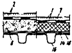 |
1 - кровля типов K-2, K-3, К-3А, K-7 (в табл. 2); 2 - кровля K-1, К-2, К-3, К-3А, К-6, К-7; |
|
П-2 - утепленное, в том числе из панелей с профилированными настилами и теплоизоляцией - основанием под кровлю |
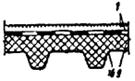 |
3 - кровля K-1 - К-3А, К-5 - К-8; 4 -кровля K-9 - К-12; 5 - стяжка типа С-2 (в п. 2.17); 6 - стяжка C-3 (в п. 2.18); 7 - теплоизоляция типов T-1, Т-3 - Т-6, Т-16 (в прил. 4); |
|
П-3 - утепленное с железобетонными плитами и теплоизоляцией - основанием под кровлю (в том числе из комплексных плит) |
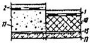 |
8 - теплоизоляция Т-7, Т-10; 9 - теплоизоляция Т-2, Т-9; 10 - теплоизоляция T-3 - Т-5; 11 - теплоизоляция Т-7, Т-9, Т-10; 12 - теплоизоляция Т-8, Т-11, Т-12; |
|
П-4 - утепленное с железобетонными плитами и стяжками по теплоизоляции (в том числе из комплексных плит) |
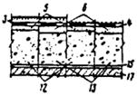 |
13 - теплоизоляция Т-15; 14 - пароизоляция типов В-1, В-2 (в прил. 5); 15 - пароизоляция В-2 - В-8; 16 - профилированные стальные настилы; |
|
П-5 - неутепленное либо утепленное чердачное с кровлей по железобетонным плитам |
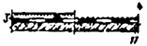 |
17 - железобетонные плиты; 18 - участки склеивания пароизоляции с настилом |
|
П-6 - утепленное с асбестоцементными полыми плитами |
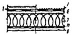 |
1 - кровля типов K-2, K-3, К-3А, K-7, К-8; 1 - кровля K-1 - К-3А, К-5 - К-8; |
|
П-7 - утепленное с асбестоцементными каркасными плитами и вентилируемой воздушной прослойкой |
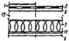 |
2 - кровля K-9 - К-12; 3 - K-4, К-4А, 4 - стяжка типа С-2; 5 - стяжка C-3; 6 - обшивка асбестоцементных плит 7 - теплоизоляция T-14; |
|
П-8 - утепленное с ребристыми или плоскими плитами из армированных легких бетонов |
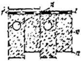 |
8 - теплоизоляция Т-8, Т-11, Т-12; 9 - теплоизоляция Т-15; 10 - теплоизоляция T-13 (несущая плита); 11 - пароизоляция В-9 - В-11; 12 - пароизоляция В-9, В-10; |
|
П-9 - эксплуатируемое |
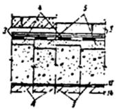 |
13 - пароизоляция В-1, В-11, В-12; 14 - несущая железобетонная плита; 15 - вентилируемая воздушная прослойка; 16 - вентиляционные каналы диаметром 50 - 60 мм через 150 - 250 мм |
|
Тип покрытия |
Схема покрытия |
Элементы покрытия |
|
Пл-1 - неутепленное (или чердачное) |
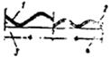 |
1 - кровля Кл-1 - Кл-4; 2 - кровля Кл-5, Кл-6; 3 - прогоны стальные или железобетонные (в п. 3.13); |
|
Пл-2 - утепленное с железобетонными или асбестоцементными несущими плитами и вентилируемой воздушной прослойкой |
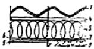 |
4 - бруски деревянные; 5 - теплоизоляция Т-14 (в прил. 4); 6 - пароизоляция В-9 - В-11 (в прил. 5); 7 - пароизоляция B-1, B-2; 8 - несущая железобетонная плита; 9 - нижняя облицовка асбестоцементной плиты |
|
Тип теплоизоляции |
Материалы теплоизоляции |
Прочность, кгс/см2, не менее |
|
|
на сжатие |
на изгиб |
||
|
т-1 |
С добавками антипирентов пенополистирольные (ГОСТ 15588-70*) или пенополиуретановые плиты либо плиты из композиционных пенопластов на основе пенoполистирола или пенополиуретана |
1,5 |
1,8 |
|
т-2 |
С добавками антипирентов пенополистирольный или пенополиуретановый монолитный слой либо слой из композиционных пенопластов на основе пeнoполистирола или пенополиуретана |
1,5 |
- |
|
т-3 |
Гидрофобизированные минераловатные плиты повышенной жесткости, производимые из гидромассы |
1 |
- |
|
Т-4 |
То же, прессового способа производства |
0,8 |
- |
|
Т-5 |
Гидрофобизированные стеклопластовые плиты |
0,6 |
- |
|
Т-6 |
Плиты перлитопластбетонные |
2 |
- |
|
Т-7 |
Плиты |
|
|
|
перлитофосфогелевые (ГОСТ 21500-76) |
4,5 |
2,5 |
|
|
из перлитового легковеса |
3 |
2 |
|
|
Т-8 |
Перлитобитумные плиты (ГОСТ 16136-70) |
- |
2 |
|
Т-9 |
Перлитобитумный монолитный слой |
1,5 |
- |
|
Т-10 |
Калиброванные плиты из ячеистых бетонов с гидрофобизацией |
8 |
- |
|
Т-11 |
Плиты: |
|
|
|
из легких бетонов |
5 |
- |
|
|
из ячеистых бетонов (ГОСТ 5742-76) |
8 |
- |
|
|
фибролитовые (ГОСТ 8928-70) |
- |
4 |
|
|
из пеностекла |
5 |
- |
|
|
Т-12 |
Легкие теплоизоляционные бетоны монолитной укладки (в основном в составе комплексных плит) |
2 |
- |
|
Т-13 |
Плиты из армированных легких бетонов (ГОСТ 7741-66) |
Определяют по расчету |
|
|
Т-14 |
Минераловатные плиты жесткие и полужесткие (ГОСТ 9573-72*) |
- |
- |
|
Т-15 |
Керамзит (ГОСТ 9759-71), шунгизит (ГОСТ 19345-73), перлит (ГОСТ 10832-74*), вермикулит (ГОСТ 12865-67) и другие теплоизоляционные засыпки с объемным весом до 600 кгс/м3 (в основном в составе комплексных плит) |
- |
- |
|
T-16 |
Пенопластовые плиты на основе резольных фенолформальдегидных смол (ГОСТ 20916-75) |
2 |
2,6 |
|
Примечания: 1. Прочность на сжатие теплоизоляции Т-1 - Т-6, T-16 определяется при 10 %-ной деформации. 2. Плиты в типах теплоизоляции Т-7 рекомендуется предварительно оклеивать рубероидом для уменьшения повреждаемости и предохранения от увлажнения. 3. В теплоизоляции типа Т-15 сверху должны укладываться и уплотняться гранулы более мелких фракций. 4. Теплоизоляционные слои монолитной укладки (типов Т-9, Т-12) должны разделиться температурно-усадочными плитами на участки размером не более 3´3 м. В покрытиях со стальными профилированными настилами эти швы должны располагаться над прогонами и фермами, а в покрытиях с железобетонными плитами - над торцевыми стыками несущих плит. 5. Не должно допускаться непосредственного контакта теплоизоляции типа Т-16 со стальными профилированными настилами. 6. В теплоизоляции типа Т-1 плиты прочностью на сжатие 1 кгс/м2 допускается при условии предварительной оклейки их рубероидом для повышения прочности при продавливании. |
|||
|
Тип пароизоляции |
Материал пароизоляции |
Расчетные сопротивления пароизоляции, м2×ч×мм рт. ст/г |
|
В-1 |
Рубероид, наклеенный на горячем битуме и покрытый сверху битумом (для наклейки теплоизолированных материалов) |
12,3 |
|
В-2 |
Рубероид, наклеенный на горячем битуме |
10,3 |
|
в-3 |
Рубероид, наклеенный на битумно-кукерсольной мастике и покрытый сверху этой же мастикой |
16,4 |
|
В-4 |
Рубероид, наклеенный на битумно-кукерсольной мастике |
13,1 |
|
B-5 |
Рубероид |
8,3 |
|
В-6 |
Окраска горячим битумом за 1 раз |
2 |
|
В-7 |
Окраска битумно-кукерсольной мастикой за 1 раз |
4,8 |
|
В-8 |
То же, за 2 раза |
8,1 |
|
в-9 |
Окраска поливинилхлоридным лаком (ГОСТ 7313-75) за 2 раза |
29 |
|
в-10 |
Окраска хлоркаучуковым лаком за 2 раза |
26 |
|
в-11 |
Полиэтиленовая пленка толщиной 200 мк, наклеенная на битумно-кукерсольной мастике (ГОСТ 10354-73) |
1000 |
|
В-12 |
Изол (ГОСТ 10296-71) |
40 |
|
Примечания: 1. Для пароизоляции предусматривается рубероид марок РКМ-350Б, РКМ-350В. 2. При проектировании пароизоляции B-1 - В-4 по бетонным поверхностям несущих железобетонных плит может предусматриваться затирка их цементно-песчаным раствором проектной марки 50 толщиной 5 мм. 3. Для пароизоляции продольных и поперечных стыков между панелями в покрытии типа П-2 (прил. 2) необходимо предусматривать применение герметизирующих мастик в соответствии с п. 2.9 настоящих Норм. |
||
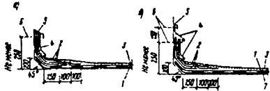
Рис. 1. Примеры примыканий кровель
а - к стенам
высотой более 450 мм; б - то же, при выполнении мероприятий по п. 5.2; 1
- основной водоизоляционный ковер (по табл. 2);
2 - слой дополнительного водоизоляционного ковра с верхним слоем из
рубероида (или толи) с крупнозернистой или чешуйчатой посыпкой (по п. 2.5);
3 - защитный слой (согласно табл. 2); 4
- защитный фартук из оцинкованной кровельной стали; 5 - герметизирующая
мастика (согласно п. 2.9);
6 - оси крепежных элементов (для закрепления слоев водоизоляционного
ковра, защитных фартуков);
7 - диффузионная прослойка (согласно п. 5.2), сообщающаяся с наружным
воздухом
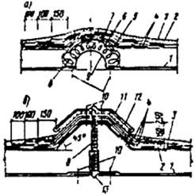
Рис. 2. Примеры решений деформационных швов
а - при ширине
шва до 60 мм с полукруглым компенсатором из оцинкованной стали (при ширине
вставки 500 - 1000 мм
компенсатор выполнять из листовой стали толщиной 3 - 4 мм); б - со стенками из сборных бетонных деталей; 1 - пароизоляция (по расчету);
2 - основной водоизоляционный ковер (по табл.
2); 3 - защитный слой (согласно табл.
2); 4 - слой дополнительного водоизоляционного
ковра по п.
2.5 (в швах с полукруглыми компенсаторами выполнять из стеклоткани
или стеклосетки); 5 - полоса рубероида (насухо);
6 - выкружка из оцинкованной кровельной стали; 7 - полотнище
рубероида (насухо); 8 - несгораемый минераловатный утеплитель;
9 - компенсатор радиусом 80 мм из оцинкованной стали; 10 - оси
крепежных элементов; 11 - фартук из оцинкованной стали;
12 - полосы из стали 4´40
мм через 600 мм; 13 - V-образный компенсатор
Рис. 3. Пример решения пропуска труб
1
- основной водоизоляционный ковер; 2 - защитный слой (согласно табл. 2); 3 - слой дополнительного водоизоляционного ковра;
4 - ось крепежных элементов; 5 - зонт из оцинкованной кровельной стали; 6 -
круглый или прямоугольный стальной патрубок с фланцем;
7 - просмоленная пакля; 8 - зажимной хомут; 9 - герметизирующая мастика; 10 -
пропускная труба
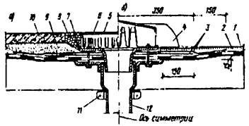
Рис. 4. Примеры решения кровель в местах установки водосточных воронок
а - в
покрытиях с железобетонными плитами при эксплуатируемой кровле (см. п.2.11);
б - то же, при неэксплуатируемой кровле;
1 - основной водоизоляционный ковер (по табл.
2); 2 - защитный слой (согласно табл.
2); 3 - слои дополнительного водоизоляционного
ковра из мастик, армированных стеклосеткой или стеклотканью; 4 -
струевыпрямитель колпака водоприемной воронки;
5 - съемная крышка водоприемного колпака; 6 - накидная гайка с
шайбой; 7 - прижимное кольцо; 8 - гравий фракцией не менее 15 мм;
9 - цементно-песчаный раствор или кварцевый песок (по п. 2.11);
10 - бетонные или армоцементные плитки (по п. 2.11);
11 - зажимной хомут; 12 - чаша водоприемной воронки
Перечень материалов и технических условий (по состоянию на 1/XII 1976 г.)
|
Наименование материала |
Номер технических условий |
Утверждены |
|
Толь гидроизоляционный антраценовый марки ТАГ-350 |
ТУ 21-27-05-68 |
Минстройматериалов СССР |
|
Рубероид антисептированный дегтевый марки РМД-350, РПД-300, РКД-420, РКД-350 |
ТУ 21-27-28-71 |
То же |
|
Рубероид с мастичным покровным слоем марки PэM-350, РаК-420, РэК-350 |
ТУ 21-27-30-72 |
» |
|
Рубероид с цветной посыпкой марки РКЦ-420 |
ТУ 21-27-09-68 |
» |
|
Рубероид наплавляемый марки PM-500-2, PK-500-2, РК-420-1 |
ТУ 21-27-35-74 |
» |
|
Стеклохолст марки ВВ-Г, ВВ-К |
ТУ 21-23-44-73 |
» |
|
Стеклосетка марки ССС, CC-1 |
ТУ 6-11-99-75 |
Минхимпром СССР |
|
Битумно-резиновая мастика (горячая) |
ТУ 21-27-41-75 |
Минстройматериалов СССР |
|
Битумная мастика (холодная) |
ТУ 21-27-l6-68 |
То же |
|
Битумно-латексно-кукерсольная мастика |
ТУ 400-2-51-76 |
Главмосстрой при Мосгорисполкоме |
|
Мастика кровелит |
ТУ 84-257-71 |
Минстройматериалов СССР |
|
Гуммировочный состав на основе наирита НТ |
ТУ 38-10-518-70 |
внииск |
|
Хлорсульфированный полиэтилен (лпк) |
ТУ 02-13-47-75 |
НИИЖБ |
|
Битумно-бутилкаучуковая мастика (холодная) марки ÌÁÁ-Õ-120 |
ТУ 21-27-39-74 |
Минстройматериалов СССР |
|
Водная суспензия тиокола T-50 |
ТУ 38-30318-70 |
Казанский з-д СК им. Кирова |
|
Раствор наирита НТ |
МРТУ 6-04-144-63 |
Миннефтехимпром СССР |
|
Герметизирующая мастика марки АМ-0,5 |
ТУ 84-246-75 |
|
|
Герметизирующая мастика марки «Эластосил 11-06» |
ТУ 6-02-755-73 |
Минхимпром СССР |
|
Герметизирующая мастика марки УТ-32 |
ТУ 38-105462-72 |
Миннефтехимпром СССР |
|
Аминная соль 2,4Д |
ТУ 6-01 -893-73 |
Минхимпром СССР |
|
Плиты пенополиуретановые |
ТУ ВНИИСС 67-66 ТУ 67-78-75 TУ 34-4627-75 |
ВНИИСС Минтяжстрой СССР Минэнерго СССР |
|
Композиционный пенопласт на основе пенополистирола |
ТУ 66-110-74 |
МПСМ РСФСР |
|
Монурон |
TУ 6-И-18-67 |
НИИХСЗР |
|
Монолитный пенополистирол с антипиренами |
ТУ 5-1-02-75 |
ЦНИИСК |
|
Гидрофобизированные минераловатные плиты повышенной жесткости из гидромассы |
ТУ 67-113-76 ТУ 21-РСФСР-3-72-76 ТУ 21-РСФСР-27-65-76 ТУ 21-УзССР-63-76 |
Минтяжстрой СССР МПСМ РСФСР То же МПСМ УзССР |
|
То же, прессового способа |
ТУ 21-ЛитССР-39-74 |
МПСМ ЛитССР |
|
Гидрофобизированные стеклопластовые плиты |
ТУ 400-1/52-62-73 |
Главмособлстройматериалов |
|
Плиты перлитопластбетонные |
ТУ 480-1-145-74 |
То же |
|
Плиты из перлитового легковеса |
ТУ 21-31-7-74 |
Минстройматериалов СССР |
|
Перлитобитумный монолитный слой |
МРТУ 21-13-65 |
То же |
|
Плиты из легких бетонов |
ТУ 400-1-63-72 |
Главмособлстройматериалов |
|
Плиты из пеностекла |
ТУ 21-01-294-69 |
Минстройматериалов СССР |
|
Хлоркаучуковый лак |
СТУ 107-03-05-62 |
Минхимпром СССР |
|
Калиброванные плиты из ячеистых бетонов (с гидрофобизацией) |
ТУ 21-ЛитССР-45-75 |
МпсМ ЛитССР |
|
Перлитовый обжиговый легковес |
ТУ 21-31-4-73 |
Минстройматериалов СССР |
|
Гернит |
ТУ 480-1-119-71 |
Главмособлстройматериалов |
|
Приборы для крепления асбестоцементных волнистых листов |
МРТУ 7-5-61 |
Госстрой СССР |
ГУПО МВД России (№ 20/22/1343 от 24 июня 1997 г.) и Управление технормирования Госстроя России (№ 13-443 от 24 июня 1997 г.) сообщают следующее.
СНиП II-26-76 "Кровли" содержит требования об устройстве защитного слоя гравия толщиной 10-20 мм на кровлях с уклоном менее 10% из рулонных и мастичных материалов. Это требование обусловлено необходимостью предохранения многослойного водоизоляционного ковра, выполняемого на основе дегтевых, битумных и битумно-полимерных материалов, от непосредственного воздействия атмосферных факторов и солнечной радиации. Кроме того, гравийный слой способствует снижению распространения огня по поверхности кровли, выполненной из материалов с высокой пожарной опасностью. Однако, СНиП II-26-76 количественных требований к уровню пожарной защиты кровли не предъявляет, а содержит только описание защиты конкретных типов кровель гравийной засыпкой.
В последнее время помимо приведенных в СНиП II-26-76 материалов разработана и находит широкое применение в практике строительства широкая гамма новых высокотехнологичных атмосферостойких кровельных композиций на основе полимерных материалов, предназначенных для устройства водоизоляционного ковра толщиной 2-4 мм. Многие из этих материалов по сравнению с традиционными рулонными менее пожароопасны, однако их применение в сочетании с гравийной засыпкой нецелесообразно.
В связи с изложенным впредь до разработки специальных противопожарных норм при использовании новых кровельных материалов, не указанных в СНиП II-26-76 и применяемых без гравийной засыпки, следует руководствоваться следующими положениями:
1. Для водоизоляционного ковра кровли следует устанавливать группу горючести по ГОСТ 30244-94 "Материалы строительные. Методы испытаний на горючесть" и группу распространения пламени - по ГОСТ Р 51032-97 "Материалы строительные. Метод испытания на распространение пламени".
2. При выполнении ремонта кровли без удаления старого водоизоляционного ковра, а также в случаях когда материал основания под кровлю не относится к негорючим (НГ) образцы для испытаний по п. 1 следует изготавливать с расположением и толщинами слоев, соответствующим фактическим условиям применения.
3. Максимально допустимую площадь кровли без гравийной засыпки, а также площадь участков, разделенных противопожарными поясами, следует принимать по таблице.
|
Группы горючести (Г) и распространения пламени (РП) водоизоляционного ковра кровли, не ниже |
Группа горючести материала основания под кровлю, не ниже |
Максимально допустимая площадь кровли без гравийной засыпки, не более, м2 |
|
Г2, РП2 |
НГ, Г1 |
Без ограничений |
|
|
Г2, Г3, Г4 |
10 000 |
|
Г3, РП2 |
НГ, Г1 |
10 000 |
|
|
Г2, Г3, Г4 |
6500 |
|
Г3, РП3 |
НГ, Г1 |
5200 |
|
|
Г2 |
3600 |
|
|
Г3 |
2000 |
|
|
Г4 |
1200 |
|
Г4 |
НГ, Г1 |
3600 |
|
|
Г2 |
2000 |
|
|
Г3 |
1200 |
|
|
Г4 |
400 |
4. Основанием под кровлю следует считать материал, расположенный непосредственно под водоизоляционным ковром. В случаях, когда основание под кровлю выполнено из материала толщиной менее 25 мм группу горючести материала основания под кровлю следует определять по методу II ГОСТ 30244-94 на образцах общей толщиной не менее 30 мм с расположением и толщинами слоев, соответствующими фактическим условиям применения.
5. Противопожарные пояса следует выполнять как защитные слои эксплуатируемых кровель (по п. 2.11 СНиП II-26-76) шириной не менее 6 м. Противопожарные пояса должны пересекать основание под кровлю (в том числе теплоизоляцию), выполненное из материалов групп горючести Г3 и Г4, на всю толщину этих материалов.
Места пересечения кровли противопожарными стенами допускается рассматривать как противопожарный пояс.
6. Суммарная толщина водоизоляционного ковра групп горючести Г3 и Г4 в процессе эксплуатации, в том числе после ремонта, не должна превышать 6 мм. В противном случае следует предусматривать защитный слой по СНиП II-26-76.
СОДЕРЖАНИЕ